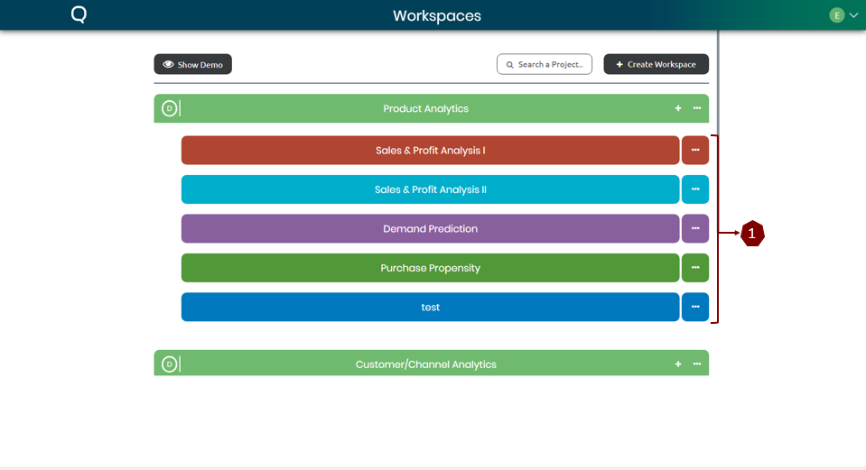

Workspace
Projects can be described as one or multiple predictive analytics models derived from a single
historical dataset. In other words, it’s the analyses made and stored for one particular dataset.

The projects are held under a specific workspace. For instance, these are the projects under the workspace
“Product Analysis”.
Creating New Project
In order to create a new project under the designated workspace there are two ways, they are
described below.

-
At the corner of the workspace bar simply click the “+” button and a popup to enter a name for
the project. Simply provide a name and click “ok” to successfully create a project.
-
At the corner of the workspace bar click the “…” button that will bring down a dropdown menu. From
the dropdown select create project and like before provide a name and hit “ok” to successfully
create a
project.
Project options
Once a project is being created you can obtain the options available for the projects.

At the corner of the project click the “…” button to bring down the dropdown menu containing all the options
for a project.
-
Connect/Import: To upload or import a dataset please select this option.
-
Reports: Reports can be used to go the saved analyses for the selected project.
-
Delete: To delete the selected project select this option.
-
Rename: This option can be used to rename a project.
-
Move To/Move Back: can be used to transfer a project from & to another workspace.
-
Add Polster Link: